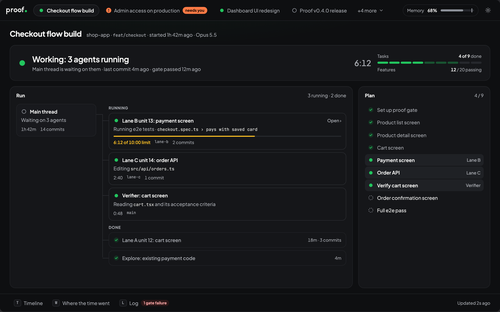

proof runs your tests, types and lint every time Claude finishes a reply and before every commit. If something fails, Claude fixes it before it gets back to you.
You end up as the person who catches the mistakes. These are the ones that slip through most.
…and the tests fail when you run them.
…so the work "passes".
Wrong copy, a few pixels off, the wrong grey.
Add a .claude/proof.json listing the checks your project already uses. proof runs them at the right moments.
Claude gets the error and keeps working. You see the reply once the checks pass.
Before every git commit the full checks run. A failure blocks the commit.
If Claude edits proof.json, proof stops it and asks you first.
…and the tests fail when you run them.
Checks run after every reply that changes files. Claude sees the failure and fixes it before handing back.
…so the work "passes".
Editing proof.json, settings.json or the fidelity kit makes Claude stop and ask you first.
Wrong copy, a few pixels off, the wrong grey.
Every tagged element is checked against the mockup: exact copy, position and size within 2px, font, colour.
The spec didn't mention it.
Every state needs its own mockup frame, and every requirement says how it'll be verified.
Claude waits forever.
Test runs and builds have time limits. A breach is reported as a hang.
Three agents and a simulator at once.
Heavy runs wait for memory. If the machine goes over the ceiling, the newest run is stopped.
No idea what happened.
The dashboard shows every session: what's running, for how long, the plan and the check results.
Claude picks the right phase on its own, or you can call one. Before each unit of work is committed, a separate verifier agent reviews it in a fresh context.
Idea → spec
/proof:discoverSpec → HTML mockup
/proof:designAny code change
/proof:build/proof:watch opens a live view of every session: what's running, for how long, the plan and the check results.

A session that stopped on a question stands out from the ones still working.
Lanes, verifiers and explorers, with timers and commits.
Listens on 127.0.0.1. proof makes no network calls.
until there's room.
the newest run Claude started is stopped.
proof tells you which ones are using the most.
Paste one prompt into Claude Code. It checks for git and Node.js, asks before installing anything, and sets proof up for you.